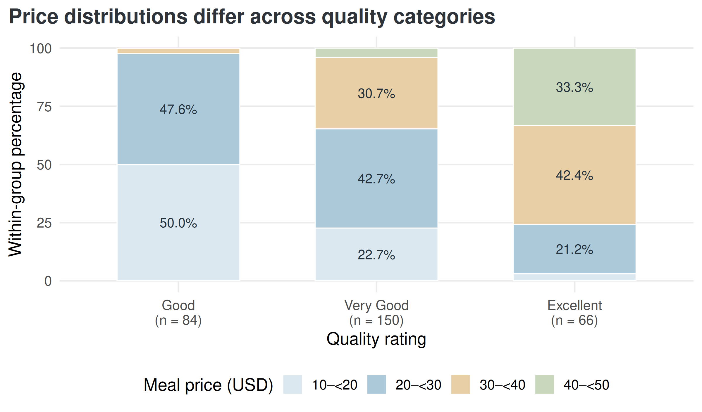
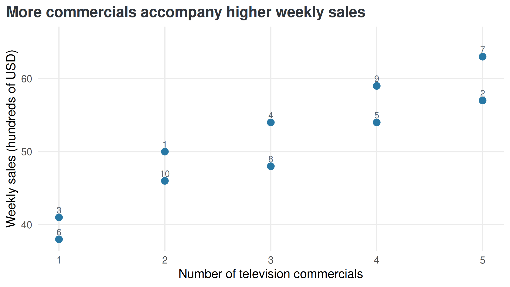
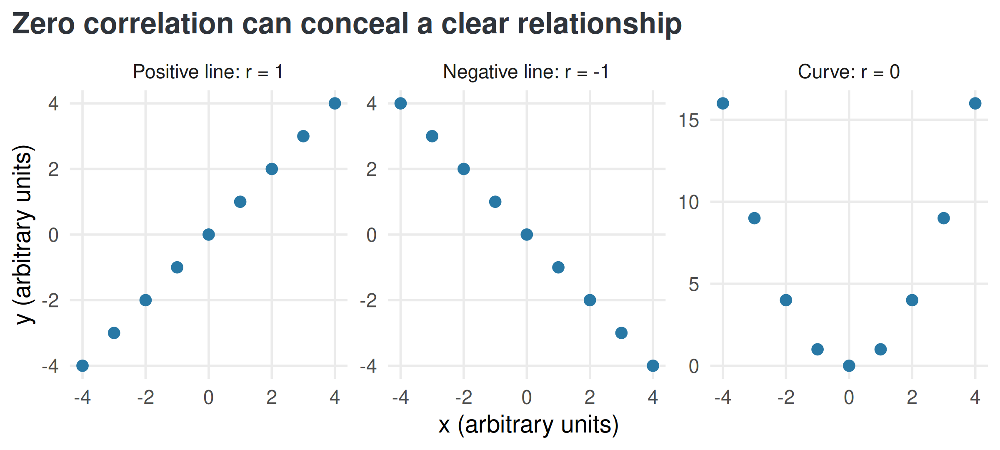

Lesson 4 | Compare proportions and describe association
What we will learn
Lessons 1–3 describe variables individually and compare numerical distributions across groups. We now ask how two variables relate within the same observations.
By the end, you should be able to:
Construct a crosstab and distinguish joint, marginal, and conditional percentages.
Choose a denominator that answers the stated question.
Read a scatterplot for direction, form, strength, and unusual observations.
Calculate sample covariance and Pearson correlation, with their units and limitations.
Describe association without claiming causation.
Reading: main 8th-edition textbook, §2.3, pp.65–69 (crosstabs and percentages), §2.4, pp.75–80 (scatterplots and comparative charts), and §3.5, pp.144–152 (covariance and correlation). These are selected descriptive topics, rather than every procedure in those sections.
Choose tools for the variable pair
Variable pair
Useful display
Numerical summary
Two categorical variables
Crosstab, grouped bars, or percentage bars
Counts and conditional percentages
Categorical and numerical
Side-by-side boxplots or aligned distribution plots
Group sizes, centers, and spreads
Two numerical variables
Scatterplot
Covariance and correlation when appropriate
A numerical variable can be grouped into classes for a crosstab. This simplifies comparisons but loses within-class detail. Keep the original values for numerical analysis. The Restaurant boxplots in Lesson 3 and the price-band tables below answer related questions at different resolutions.
Business case: quality ratings and meal-price bands
An analyst studies 300 Los Angeles restaurants from the book’s historical teaching dataset. Each restaurant has an ordered quality rating and a meal price in US dollars. The analyst asks: Within each quality category, how are restaurants distributed across price bands? A second question reverses the conditioning: Within a price band, how are quality ratings distributed? These questions use the same records but different denominators.
يدرس محلّل بيانات ثلاثمئة مطعم في لوس أنجلوس من بيانات الكتاب التعليمية التاريخية. لكل مطعم تقييم جودة مرتب وسعر وجبة بالدولار الأمريكي. يسأل المحلّل: داخل كل فئة من فئات الجودة، كيف تتوزع المطاعم على فئات الأسعار؟ ثم يعكس السؤال: داخل فئة سعرية محددة، كيف تتوزع تقييمات الجودة؟ يستخدم السؤالان السجلات نفسها، لكن مقام حساب النسبة يختلف بينهما.
Download Restaurant CSV. One row is one restaurant. The four bands are [10,20), [20,30), [30,40), [40,50) USD: include the lower boundary and exclude the upper one. A price of USD 20 belongs to the second band. For these whole-dollar observations, these correspond to the book’s USD 10–19, 20–29, 30–39, and 40–49 classes.
Crosstabs: count combinations
A crosstabulation counts observations classified by two variables. Each internal cell describes a combination. Marginal totals describe each variable separately.
Show R code
# addmargins() adds row totals, column totals, and the grand total to the crosstab.# kable() displays counts, not percentages; each internal cell counts one combination.kable(addmargins(counts), caption ="Restaurants by quality and meal-price band (USD). Sum denotes totals.")
Restaurants by quality and meal-price band (USD). Sum denotes totals.
10–<20
20–<30
30–<40
40–<50
Sum
Good
42
40
2
0
84
Very Good
34
64
46
6
150
Excellent
2
14
28
22
66
Sum
78
118
76
28
300
The cell 64 represents Very Good restaurants priced from USD 20 up to, but below, USD 30. The Very Good row total is 150, the second price-band column total is 118, and the grand total is 300. A restaurant contributes to exactly one internal cell.
Joint, marginal, and conditional percentages
The same count can answer different questions:
Question
Denominator
Calculation
Interpretation
What share of all restaurants are Very Good and in the second price band?
All 300 restaurants
\(64/300\times100=21.33\%\)
Joint percentage
What share of all restaurants are Very Good?
All 300 restaurants
\(150/300\times100=50\%\)
Marginal percentage
Among Very Good restaurants, what share are in the second price band?
The 150 Very Good restaurants
\(64/150\times100=42.67\%\)
Conditional row percentage
Among restaurants in the second price band, what share are Very Good?
The 118 restaurants in that band
\(64/118\times100=54.24\%\)
Conditional column percentage
Say “among whom?” before calculating a percentage. A percentage without its reference group can answer the wrong question even when the arithmetic is correct.
Row percentages: price distribution within quality
Show R code
# kable(): formats a data frame or matrix as a readable report table; digits sets displayed precision.# rowSums(): sums each row separately.# row_pct was calculated with prop.table(counts, margin = 1): divide by each row total.# cbind() adds the percentage totals; digits = 1 rounds only the displayed values.kable(cbind(row_pct, Total =rowSums(row_pct)), digits =1,caption ="Within each quality category: percentage in each price band. Each row totals 100% before rounding.")
Within each quality category: percentage in each price band. Each row totals 100% before rounding.
10–<20
20–<30
30–<40
40–<50
Total
Good
50.0
47.6
2.4
0.0
100
Very Good
22.7
42.7
30.7
4.0
100
Excellent
3.0
21.2
42.4
33.3
100
For Good restaurants, 50.0% fall in the lowest band. For Excellent restaurants, 75.8% cost at least USD 30: \((28+22)/66\times100\). The comparable share for Good is 2.4%: \((2+0)/84\times100\). These distributions differ substantially in this sample.
The groups contain 84, 150, and 66 restaurants. Conditional percentages make their distributions comparable despite unequal group sizes. Counts should still accompany the comparison.
Show R code
# factor(): stores categorical values; levels fixes their permitted order and labels can rename their display.# ifelse(): chooses a value element by element according to a logical condition.# sprintf(): formats text using placeholders such as %.2f for two decimal places.# paste0(): joins text with no separator; collapse can combine a vector into one string.# rowSums(): sums each row separately.# ggplot(): starts a plot from data; additional layers are joined with +.# aes(): maps variables to visual properties such as x, y, fill, color, or group.# geom_col(): draws bars at supplied heights; it does not count records.# geom_text(): draws labels from mapped data; position and hjust/vjust control placement.# scale_fill_manual(): assigns explicit fill colors to categories; named values preserve category-color mappings.# c(): combines values into a vector, converting them to a common type when needed.# scale_x_discrete(): controls category order, labels, and spacing on the x-axis.# scale_y_continuous(): controls numeric y-axis breaks, labels, limits, and spacing.# seq(): creates an equally spaced sequence; by sets spacing and length.out sets the number of values.# labs(): sets axis titles, legend titles, plot titles, and captions.# theme(): customizes non-data plot elements such as legends, grids, and axis text.# as.data.frame() reshapes the percentage table into one row per quality-price combination.# position_stack() places segments and labels within each 100% quality-group bar.bar_data <-as.data.frame(row_pct, responseName ="Percent")bar_data$Quality <-factor(bar_data$Quality, levels = quality_levels)bar_data$Price <-factor(bar_data$Price, levels = price_labels)bar_data$Label <-ifelse(bar_data$Percent >=8, sprintf("%.1f%%",bar_data$Percent), "")quality_axis <-paste0(quality_levels, "\n(n = ", rowSums(counts), ")")ggplot(bar_data, aes(Quality, Percent, fill = Price)) +geom_col(position =position_stack(reverse =TRUE), width = .62,colour ="white", linewidth = .4) +geom_text(aes(label = Label), position =position_stack(vjust = .5, reverse =TRUE),colour ="#22313C", size =3.8) +scale_fill_manual(values =c("#DCE8EF", "#ACC9DA", "#E8CFA5", "#C9D8BD"), drop =FALSE) +scale_x_discrete(labels = quality_axis) +scale_y_continuous(breaks =seq(0,100,25), limits =c(0,100)) +labs(title ="Price distributions differ across quality categories",x ="Quality rating", y ="Within-group percentage", fill ="Meal price (USD)") +theme(legend.position ="bottom")

Figure 1: Original R chart from the checked Restaurant CSV. Every bar represents 100% of its quality group. Segment labels are percentages; n gives group size.
Small segments are readable in the table even when too narrow for a label. Middle segments in stacked bars have different baselines, so use the table for precise comparisons.
Column percentages: quality distribution within price
Show R code
# kable(): formats a data frame or matrix as a readable report table; digits sets displayed precision.# colSums(): sums each column separately.# column_pct uses prop.table(counts, margin = 2): divide by each column total.# rbind() adds a totals row so each price-band distribution can be checked against 100%.kable(rbind(column_pct, Total =colSums(column_pct)), digits =1,caption ="Within each price band: percentage in each quality category. Each column totals 100% before rounding.")
Within each price band: percentage in each quality category. Each column totals 100% before rounding.
10–<20
20–<30
30–<40
40–<50
Good
53.8
33.9
2.6
0.0
Very Good
43.6
54.2
60.5
21.4
Excellent
2.6
11.9
36.8
78.6
Total
100.0
100.0
100.0
100.0
Among the 28 restaurants in the highest band, 22 are Excellent, or 78.6%. Among the 66 Excellent restaurants, 22 are in the highest band, or 33.3%. Reversing the conditioning changes the denominator and the answer.
Show R code
# stopifnot(): stops execution if any supplied condition is FALSE; successful checks produce no output.# abs(): returns absolute values; a small tolerance in an equality check permits floating-point rounding.# Index counts and percentages by quality row and price-band column.# stopifnot() stops execution if the count or either conditioning denominator is incorrect.stopifnot(counts["Very Good",2] ==64,abs(row_pct["Very Good",2]-100*64/150) <1e-10,abs(column_pct["Very Good",2]-100*64/118) <1e-10)
NoteCalculate from counts, then round
Our percentages come directly from the checked counts. Round only for display. Independently rounded cells may not total exactly 100%. The book’s Table 2.11 prints some cells differently (for example 33.4% for 22/66); our calculated value rounds to 33.3%. We retain the observations and reproducible arithmetic.
Crosstabs show an association between quality and price bands here. They do not show that raising a price improves quality. Grouping boundaries can affect the display, and combining subgroups can hide or reverse patterns. The book develops this aggregation issue as Simpson’s paradox in §2.3. A full subgroup analysis would require relevant subgroup data, which this Restaurant file does not contain.
Business case: commercials and weekly electronics sales
A San Francisco electronics store records 10 weeks of television-commercial counts and sales. One row pairs the commercials and sales from the same week. Sales are recorded in hundreds of US dollars: a value of 50 means USD 5,000. The question is: Do weeks with more commercials tend to have higher sales? These historical observations can describe an association, but they do not isolate the effect of advertising.
يسجّل متجر إلكترونيات في سان فرانسيسكو عدد الإعلانات التلفزيونية والمبيعات خلال عشرة أسابيع. يجمع كل صف عدد الإعلانات والمبيعات للأسبوع نفسه. سُجّلت المبيعات بمئات الدولارات الأمريكية؛ فالقيمة 50 تعني خمسة آلاف دولار. والسؤال هو: هل تميل الأسابيع التي تضم إعلانات أكثر إلى تسجيل مبيعات أعلى؟ تصف هذه المشاهدات التاريخية ارتباطًا، لكنها لا تعزل أثر الإعلان في المبيعات.
Download Electronics CSV. The original workbook is named Stereo.xls; all ten observations match the book’s Electronics table. week identifies the observation, while commercials and sales_hundreds_usd form our variable pair.
Show R code
# c(): combines values into a vector, converting them to a common type when needed.# kable() displays each week together with its commercials and sales observations.# col.names changes the visible headings, including the sales unit, without changing the data.kable(electronics, col.names =c("Week", "Commercials", "Sales (hundreds of USD)"))
Week
Commercials
Sales (hundreds of USD)
1
2
50
2
5
57
3
1
41
4
3
54
5
4
54
6
1
38
7
5
63
8
3
48
9
4
59
10
2
46
Scatterplots: inspect the paired pattern
A scatterplot places one numerical variable on each axis and one point for each paired observation. Keep each week’s pair together. Sorting the two columns independently destroys the observed relationship.
Show R code
# ggplot(): starts a plot from data; additional layers are joined with +.# aes(): maps variables to visual properties such as x, y, fill, color, or group.# scale_y_continuous(): controls numeric y-axis breaks, labels, limits, and spacing.# expansion(): sets extra axis space; mult is relative padding and add is padding in axis units.# c(): combines values into a vector, converting them to a common type when needed.# labs(): sets axis titles, legend titles, plot titles, and captions.# geom_point() draws each paired week; geom_text() labels points with week identifiers.# nudge_y moves labels above points, and scale_x_continuous() sets the count-axis tick marks.ggplot(electronics, aes(commercials, sales_hundreds_usd)) +geom_point(size =3.2, colour ="#2878A5") +geom_text(aes(label = week), nudge_y =1, size =3.5, colour ="#56616D") +scale_x_continuous(breaks =1:5) +scale_y_continuous(expand =expansion(mult =c(.06,.12))) +labs(title ="More commercials accompany higher weekly sales",x ="Number of television commercials", y ="Weekly sales (hundreds of USD)")

Figure 2: Original R scatterplot of the ten checked Electronics observations. Labels identify weeks. No fitted regression model is required for this descriptive display.
Read four features before calculating a coefficient:
Direction: as commercials increase, sales tend to increase. This is a positive association.
Form: the pattern is approximately straight rather than clearly curved.
Strength: points cluster fairly closely around an upward linear pattern, with variation at each commercial count.
Unusual observations: look for isolated points and values far from the overall pattern. The plot alone cannot establish whether a record is erroneous.
The count is on the horizontal axis because it is the proposed explanatory variable for this question. That placement does not establish cause and effect. We leave connecting lines out because our immediate question concerns the paired relationship, rather than a chronological sales path.
When both observations are above their means, or both below, their product of deviations is positive. Opposite signs give a negative product. Summing these products describes whether deviations tend to move together.
Show R code
# data.frame(): builds a table whose named columns have compatible lengths.# mean(): computes an average; logical TRUE/FALSE values contribute 1/0, giving a proportion.# kable(): formats a data frame or matrix as a readable report table; digits sets displayed precision.# stopifnot(): stops execution if any supplied condition is FALSE; successful checks produce no output.# Subtract each sample mean and multiply the paired deviations week by week.# sum() combines the cross-products; cov() divides their sum by n-1 for sample covariance.x <- electronics$commercialsy <- electronics$sales_hundreds_usdproducts <-data.frame(Week = electronics$week, x = x, y = y,x_deviation = x-mean(x), y_deviation = y-mean(y),Product = (x-mean(x))*(y-mean(y)))kable(products, digits =1)
Here \(\bar{x}=3\), \(\bar{y}=51\), and the sum of products is 99. Thus \(s_{xy}=99/9=11\), in commercials × hundreds of USD. Positive covariance agrees with the upward scatterplot.
Covariance depends on measurement units. Its sign helps describe direction, but its magnitude alone cannot establish that an association is strong. For a complete population, the population covariance uses population means and denominator \(N\). R’s cov() uses the sample denominator \(n-1\).
Correlation: standardize the linear association
The Pearson sample correlation divides covariance by the sample standard deviations:
\[r=\frac{s_{xy}}{s_xs_y}.\]
It requires paired numerical observations with nonzero variation in both variables. It is unitless, ranges from −1 to +1, and describes linear association:
Value
Meaning
\(r=+1\)
All points lie on a straight line with positive slope
\(r=-1\)
All points lie on a straight line with negative slope
\(r\) near zero
Little linear association; a nonlinear relationship may remain
Larger \(|r|\)
Stronger linear association, interpreted with the plot and context
Show R code
# kable(): formats a data frame or matrix as a readable report table; digits sets displayed precision.# data.frame(): builds a table whose named columns have compatible lengths.# c(): combines values into a vector, converting them to a common type when needed.# stopifnot(): stops execution if any supplied condition is FALSE; successful checks produce no output.# abs(): returns absolute values; a small tolerance in an equality check permits floating-point rounding.# cor() calculates Pearson linear correlation from the paired observations.# Dividing cov(x,y) by sd(x)*sd(y) checks the same unitless calculation explicitly.r <-cor(x,y)kable(data.frame(Quantity =c("Sample SD: commercials", "Sample SD: sales (hundreds of USD)","Sample covariance", "Pearson correlation"),Value =c(sd(x),sd(y),cov(x,y),r)), digits =4)
Interpretation: across these ten weeks, commercials and sales have a strong positive linear association, \(r\approx0.9305\), consistent with the book’s rounded value 0.93. This does not mean “sales increase by 93%,” and correlation does not give a change in sales per additional commercial. Estimating such a change requires a model, developed later in regression.
# data.frame(): builds a table whose named columns have compatible lengths.# c(): combines values into a vector, converting them to a common type when needed.# kable(): formats a data frame or matrix as a readable report table; digits sets displayed precision.# stopifnot(): stops execution if any supplied condition is FALSE; successful checks produce no output.# abs(): returns absolute values; a small tolerance in an equality check permits floating-point rounding.# Multiply recorded sales by 100 to convert hundreds of USD into USD.# cov() scales by the same factor; cor() is unchanged under this positive unit conversion.y_usd <-100*yunits <-data.frame(Sales_unit =c("Hundreds of USD", "USD"),Sample_covariance =c(cov(x,y),cov(x,y_usd)),Correlation =c(cor(x,y),cor(x,y_usd)))kable(units, digits =4)
Converting sales to USD changes covariance from 11 to 1100, but the correlation stays 0.9305. The underlying relationship has not changed. Positive changes of measurement units and shifts of origin leave Pearson correlation unchanged. Correlation also treats \(x\) and \(y\) symmetrically: cor(x,y) equals cor(y,x).
Why a correlation coefficient needs its plot
The following are artificial teaching patterns, not Electronics data. The curved pattern uses \(y=x^2\) for \(x=-4,-3,\ldots,4\).
Show R code
# data.frame(): builds a table whose named columns have compatible lengths.# factor(): stores categorical values; levels fixes their permitted order and labels can rename their display.# c(): combines values into a vector, converting them to a common type when needed.# stopifnot(): stops execution if any supplied condition is FALSE; successful checks produce no output.# abs(): returns absolute values; a small tolerance in an equality check permits floating-point rounding.# ggplot(): starts a plot from data; additional layers are joined with +.# aes(): maps variables to visual properties such as x, y, fill, color, or group.# geom_point(): draws a point for each row at its mapped x and y values.# labs(): sets axis titles, legend titles, plot titles, and captions.# rbind() combines three explicitly artificial paired patterns: y=x, y=-x, and y=x^2.# facet_wrap() separates the plots; cor() verifies that a curve can have zero linear correlation.u <--4:4patterns <-rbind(data.frame(Pattern ="Positive line: r = 1", x = u, y = u),data.frame(Pattern ="Negative line: r = -1", x = u, y =-u),data.frame(Pattern ="Curve: r = 0", x = u, y = u^2))patterns$Pattern <-factor(patterns$Pattern,levels =c("Positive line: r = 1", "Negative line: r = -1", "Curve: r = 0"))stopifnot(cor(u,u) ==1, cor(u,-u) ==-1, abs(cor(u,u^2)) <1e-10)ggplot(patterns, aes(x,y)) +geom_point(size =2.5, colour ="#2878A5") +facet_wrap(~Pattern, nrow =1, scales ="free_y") +labs(title ="Zero correlation can conceal a clear relationship",x ="x (arbitrary units)", y ="y (arbitrary units)")

Figure 3: Original artificial examples. Pearson correlation captures straight-line direction but can be zero despite a clear curved relationship. Panel axes use arbitrary units.
Keep these limitations in view:
Nonlinearity:\(r=0\) does not establish that variables are unrelated or independent.
Influential observations: an isolated observation can substantially change correlation. Investigate it and compare results transparently; preserve valid records.
Restricted range and mixed groups: a narrow observed range or a mixture of subgroups can change the apparent association. Inspect context and subgroup information when available.
Causation: seasonal demand, promotions, or other unmeasured factors might affect both advertising and sales. These are possible explanations to investigate, not recorded facts about this store.
Scope: ten observed weeks do not establish a stable relationship for all future weeks. Repeated weeks may also be dependent; calculation alone does not justify inferential claims.
Computing Pearson correlation requires no normality assumption by itself. Hypothesis tests and confidence intervals for association require additional assumptions and belong to later modules.
Summary: a defensible relationship description
Task
What to report
Essential check
Compare categorical distributions
Counts, group sizes, and conditional percentages
State the conditioning group and denominator
Compare numerical distributions by group
Group centers, spreads, and aligned plots
Use meaningful units and the same conventions
Describe two numerical variables
Scatterplot and, when suitable, covariance and correlation
Keep pairs intact; check shape and influential observations
Explain the result
An association in the observed context
Separate descriptive evidence from causal claims
For Restaurant, conditional price distributions differ across ratings. For Electronics, weekly commercials and sales show a strong positive linear association. Neither result establishes a causal effect.
Anderson et al. (2020), Essentials of Modern Business Statistics with Microsoft Excel, 8th ed.: §2.3, pp.65–69, Tables 2.9–2.11; §2.4, pp.75–80, Table 2.14; §3.5, pp.144–152, Table 3.6 and the covariance/correlation example.
Restaurant CSV: first ten displayed records and all twelve cells of Table 2.10 match; remaining individual records are not printed for comparison.
Electronics CSV: all ten paired observations match Table 2.14 and the repeated example in Table 3.6. R calculations reproduce covariance 11 and correlation rounded to 0.93.
All charts and numerical tables here are original R outputs from these CSVs, except the explicitly artificial correlation-pattern illustration. Data guide.